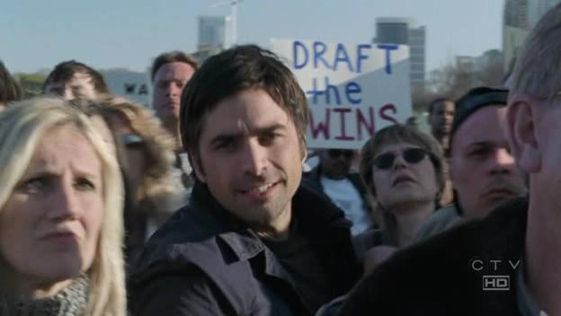

Neela!!!

If you watched ER's season finale, it was quite a shocker! Once again, Carol's (brief) appearance was in the final scene of the episode, at 42:34, for about 4 seconds. Carol was visible just before the explosion when Gates is working his way through the crowd towards Neela. In the screen shot above, she is wearing sunglasses, just to the right of Gates.
In the first second or so, it appears as if Gates is pushing her out of the way (as reported earlier, Carol said that in one of the takes, John Stamos brushed past her), and in the last seconds, she is seen looking up towards the podium, listening intently to the speaker, and no doubt irritated that this guy is muscling his way through the crowd. (I got all that from the intense look on her face, didn't you?)
** Since it is a difficult to realize the full emotional impact of Carol's performance in the 4 second clip above, I created the following slow-mo version. Enjoy!
** Carol's legs may also be visible during the shots where Neela is getting trampled, but we're waiting for the forensic analysis of the recording before we make that call.
Originally published on the Blogspot site